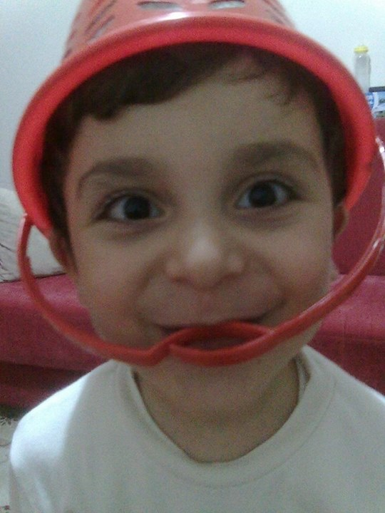
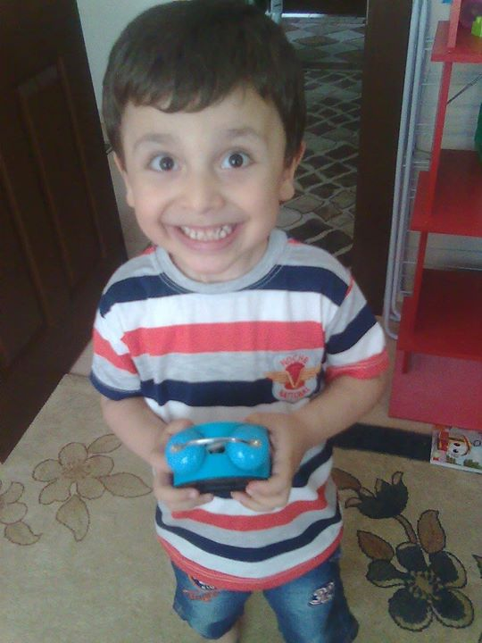
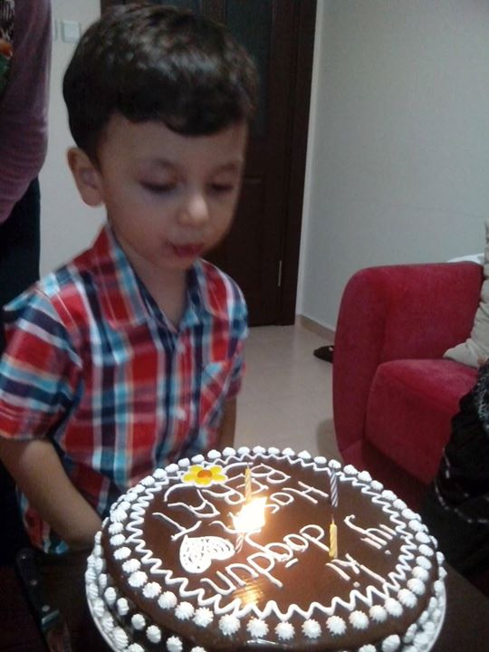

Merhaba,
ben Hasan.
16 yaşındayım. Elektronik, mekanik ve teknolojiyle aram iyi. Bir şeyleri tamir etmeyi, tasarlamayı ve açık kaynak projelere katkı vermeyi seviyorum.
Biraz benden
Küçükken bir gün boyunca bir çalar saati tamir etmeye çalışmışım. Tamir edebildim mi, hatırlamıyorum.
İlkokulda sınıf başkanıydım. Bir gün öğretmenimiz sınıftan çıkmak zorunda kalınca beni bilgisayarın başına geçirdi. Trackpad'den kaydırma yapmayı bile bilmiyordum.
Yolculuğum
-
computer Her şey evde başladı
2020 · PandemiHerkes evlere kapanınca eğitim uzaktan yapılmaya başlandı. Evimize ilk kez bir bilgisayar ve ev interneti geldi. O günden beri teknolojiyle ve insanlara faydalı bir şeyler yapmakla uğraşıyorum.
-
build Laptop bozuldu
2024 başıAnakart arızası yüzünden laptopum sürekli kapanmaya başladı. Defalarca tamire götürdük ama düzelmedi.
-
heart_broken Her şey silindi
2026 başıTamirden döndüğünde hâlâ bozuktu, üstüne içindeki her şey silinmişti: projelerim, videolarımız ve çocukluk fotoğraflarım. Kuzenlerimden sadece 40-50 fotoğrafı kurtarabildik.
-
cloud_done Yeniden başlıyorum
ŞimdiArtık her şeyi yedekliyorum. Bilgisayarım olmadığı için telefondan tasarımlar yapıyor, açık kaynak uygulamalara Türkçe çeviri katkısı veriyorum. Yeni bir bilgisayar için para biriktiriyorum.
Elimde kalan anılar
Verilerimi kaybettikten sonra elimde kalan çocukluk karelerinden bazıları.



Şu an
© 2026 Hasan